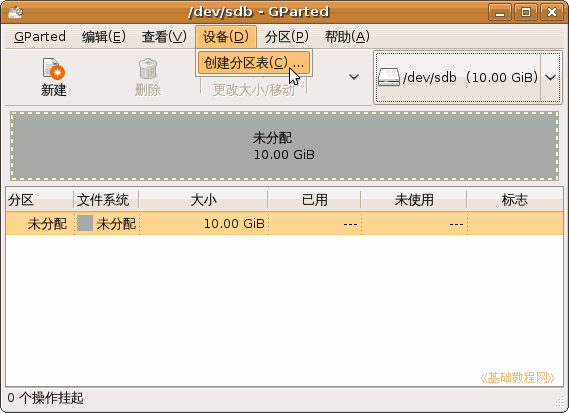

Gparted 分区编辑器基础
作者：TeliuTe 来源：基础教程网
二、创建分区 返回目录 下一课对于空的磁盘或者新磁盘，需要进行格式化和新建分区，下面我们来看一个练习；
1、创建分区程序
1）点菜单“系统－系统工具－分区编辑器”，进入窗口，
注意：下面的操作既可以一起执行，也可以挑选其中一项来操作，这儿是讲解各种操作，要根据自己的实际情况来选择某一项或某几个操作；
2）对于新磁盘，点工具栏上的“新建”按钮，也可以点菜单“设备－创建分区表”，
出来一个创建分区表的面板，这一般出现在虚拟机中的新建磁盘；

3）出来一个对话框，提示将清除这个磁盘里的所有数据，点“创建”按钮；
4）稍等完成创建，再点菜单“分区－新建”命令，也可以点工具栏上的“新建”按钮，出来一个新建分区面板；
5）一个磁盘一般划分成主分区和扩展分区，总数最多只能有4个，
主分区可以用来安装系统或者引导系统，扩展分区用以进一步划分逻辑分区，逻辑分区的数量不限；
；
根据将要安装系统的大小来指定分区大小，这儿是按照Ubuntu系统，给了4G大小的主分区，使用ext3格式；
6）再选中列表中的“未分配”分区，点“新建”，这次选择创建为“扩展分区”，
如果要安装Windows操作系统，必须要安装在前面的主分区上，Ubuntu既可以安装到主分区也可以在逻辑分区上；
扩展分区主要可以用来划分多个逻辑分区，本身并不能使用，只是作为一个“容器”，此时列表中仍然显示“未分配”；
7）继续选中列表里的“未分配”，点“新建”按钮，这次创建为“交换分区”，是一个逻辑分区，大小跟自己内存相当；
8）接下来，同样将剩下的部分创建为逻辑分区，文件系统格式为ext2，将来可以用作存放/home；

9）这样就划分好了整个磁盘，在Ubuntu安装的时候，也会调用分区编辑器来分区，操作意思相同；
2、应用操作
1）这时窗口下面的任务栏里，提示有4个操作等待执行，仔细检查一下，确认要进行这些操作，
注意：操作会清除磁盘上的所有数据，请确认要进行这些操作；
2）如果点菜单“编辑－应用所有操作”，就会出来一个提示“操作之前对数据进行备份”；

3）如果点“应用”，就出来一个创建面板，执行前面的操作，这儿点“取消”，
；
操作完成后，列表中显示了前面设定的各个分区名称、格式和大小，
第一个磁盘称为sda，第二块磁盘称为sdb，主分区名称从1开始到4，逻辑分区从5开始；
4）这儿只是练习，点菜单“编辑－清除所有操作”，回到开始的状态，关闭窗口退出；
本节学习了Ubuntu分区编辑器中创建分区的基本操作，如果你成功地完成了练习，请继续学习下一课内容；
本教程由86团学校TeliuTe制作|著作权所有
基础教程网：http://teliute.org/
美丽的校园……
转载和引用本站内容，请保留版权信息和本站链接。